Configuración de la Asociación
Administra los datos estructurales y financieros de tu asociación.
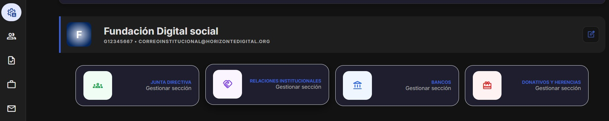
Este es el menu que te encuentras al entrar en el apartado de configuración. Desde aqui, podemos acceder a los siguientes apartados: agregar una asociacion, las relaciones institucionales, los bancos y los donativos y herencias
En esta pantalla podemos ver la informacion general de la asociacion, como el nombre, la sede, el contacto, etc. en el momento que se crea, permanecen esos datos en la pantalla.
Este es el boton para agregar/editar la informacion de la asociacion
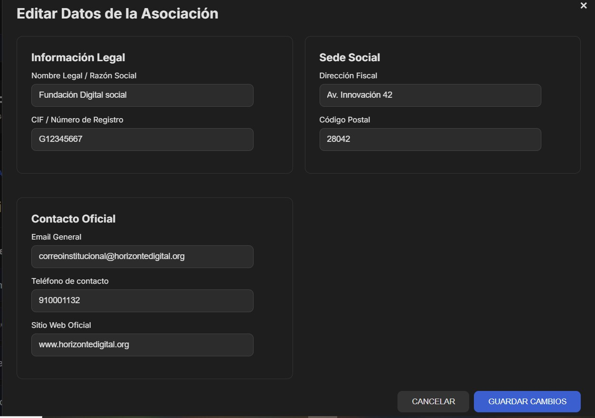
Este es el formulario para agregar/editar la informacion de la asociacion
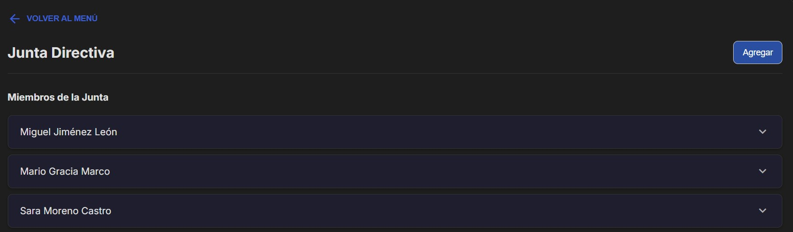
En este apartado podemos ver los miembros que componen la junta directiva
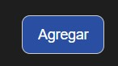
Podemos agregar nuevos miembros a la junta directiva, además podemos editarlos y eliminarlos en caso de que dejer de formar parte de la junta directiva.
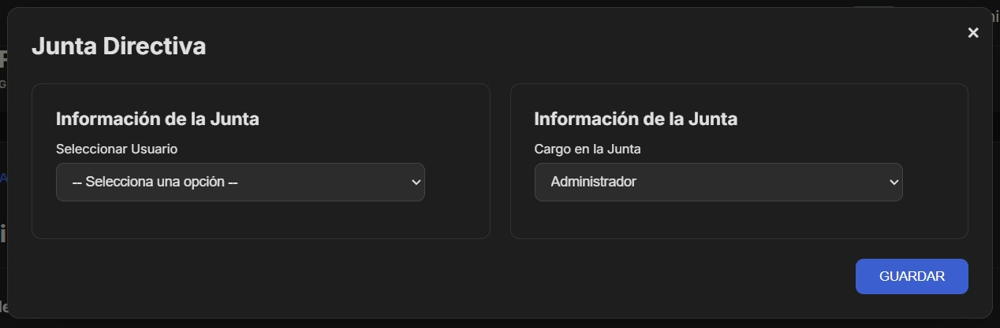
Este es el formulario para agregar miembros

En este apartado podemos ver las relacion que tiene la asociacion con otras instituciones
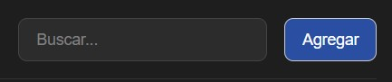
Podemos agregar nuevas relaciones institucionales, además podemos editarlas y eliminarlas en caso de que dejer de formar parte de la junta directiva.
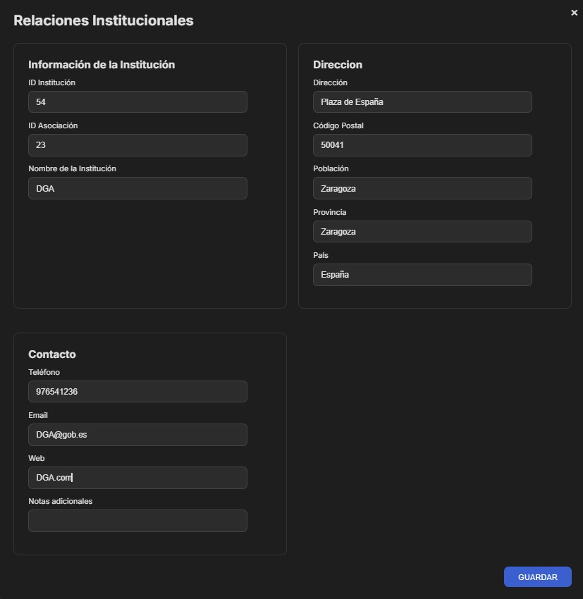
Este es el formulario para editar relaciones institucionales
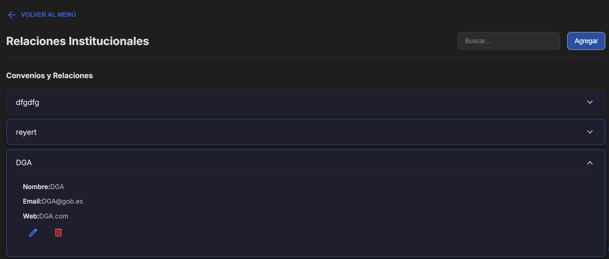
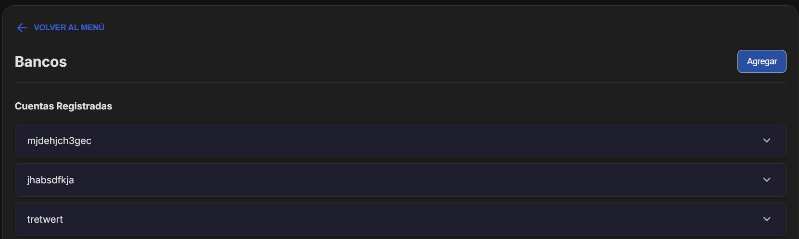
En este apartado podemos ver los bancos con los que colabora la asociacion
Podemos agregar nuevos bancos, además podemos editarlos y eliminarlos.
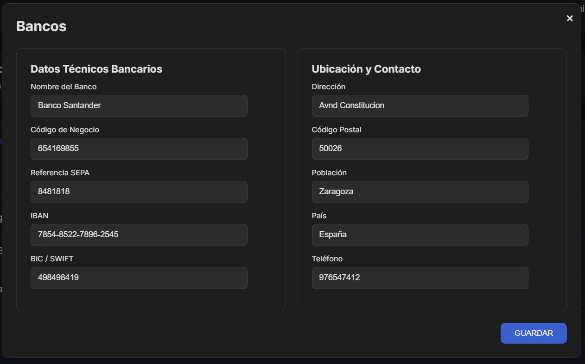
Este es el formulario donde podemos añadir el banco
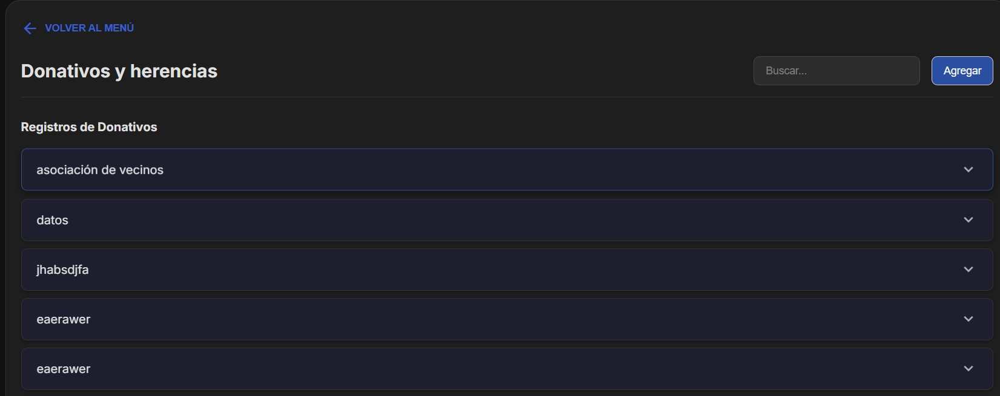
En este apartado podemos ver los donativos y herencias que ha recibido la asociacion
Podemos agregar nuevos donativos y herencias, además podemos editarlos y eliminarlos.
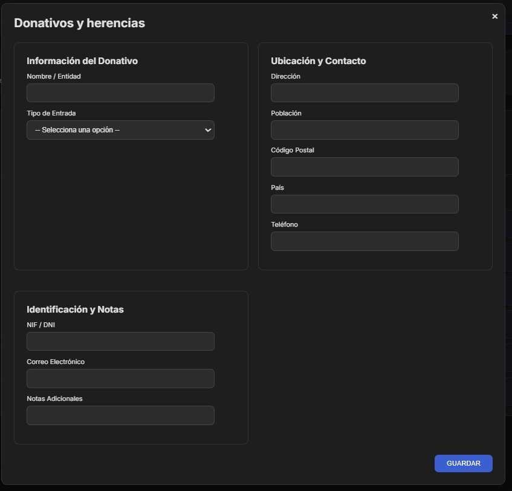
Este es el formulario donde podemos añadir donativos y herencias